Sample & Bulk Order Handbook
CC Production & QMS — Cotton to Customer
This handbook covers everything involved in creating and running orders: from opening the
login screen, to creating a Sample Class or Bulk Project, to registering orders under it, to
driving every production stage through QC approval, rejection, defect gating, completion,
promotion to bulk, and reordering.
Every step below has a screenshot taken from the live system, followed by a short explanation of
what you are looking at and exactly what to click.
Contents
1. How the system is organised
Everything in the system sits in four levels. You always work top-down.
| Level | What it is | Where you manage it |
|---|---|---|
| 1. Vendor | The factory that will make the goods. Holds floors, lines and a sampling department. | Vendors |
| 2. Project class | The folder that groups orders for one customer programme. Called a Sample Class on the sampling side and a Bulk Project on the bulk side. | Sampling Projects / Bulk Projects |
| 3. Order | One actual job — a prototype, or a PO for a quantity of a style. | Inside the class, via View Orders / View Batch Items |
| 4. Stages | The sequential production steps of that order, each with its own target date, buffer, comments, attachments and approvals. | Inside the order detail page |
If the vendor dropdown is empty, the vendor has to be created (or assigned to you) first.
The two tracks
The system runs two separate pipelines. They look similar but behave differently.
| Sampling track | Bulk track | |
|---|---|---|
| Menu | Sampling Projects | Bulk Projects |
| Container | Sample Class | Bulk Project |
| Create button | Initiate Prototype | Register Style PO |
| Orders per submit | One order | Many orders (batches) at once |
| Default stages | 10 | 15 |
| Where goods are placed | Vendor sampling department (no floor/line needed) | Vendor floors and lines |
| Stage that decides quality | PPS QC Check (3 options) | PP Sample Development (3 options) + 3 inspection stages (Accept/Reject) |
| Rejection can restart from | Any earlier stage | Only the same stage (that stage repeats) |
| When finished | Can be promoted to Bulk | Can be reordered |
2. Who can do what (roles)
The menu and the buttons you see change with your role. If a button in this handbook is missing
on your screen, check this table first.
| Action | Super Admin | Admin | Manager | QC Officer | Viewer |
|---|---|---|---|---|---|
| See all company data | Yes | Yes | Only own vendors | Only own vendors | Yes (read-only) |
| Create Sample Class / Bulk Project | Yes | Yes | Yes | No | No |
| Edit / delete a class card | Yes | No | Yes | No | No |
| Deactivate a class | Yes | Yes | Yes | Yes | No |
| Create orders | Yes | Yes | Yes | No | No |
| Edit an order | Yes | Yes | Yes | No | No |
| Update stages, approve, reject, clear defects | Yes | Yes | Yes | Yes | No |
| Cancel an order | Yes | Yes | Yes | Yes | No |
| Promote to bulk / Reorder | Yes | Yes | Yes | No | No |
| Move an order to another class | Yes | Yes | Yes | No | No |
| Users menu | Yes | Yes | No | No | No |
Two rules that surprise people:
- Super Admins and Managers see the pencil and bin icons on a Sample Class or Bulk Project card. Other
roles can still view or work inside them. - Managers and QC officers only see vendors they are the assigned manager for. If an order or
vendor is "missing", it usually belongs to another manager. Ask an admin to assign the vendor to you. - Viewers see everything but can change nothing. A blue Viewer Mode banner appears at the top of
order pages and all action buttons are hidden.
3. Logging in
Open the system in your browser. You land on the sign-in screen.
The left panel is only branding. Everything you need is the white card on the right.
Steps
- Type your work email in Email Address.
- Type your password in Password. The eye icon reveals it if you need to check a typo.
- Tick Remember me if this is your own device.
- Click Sign In.
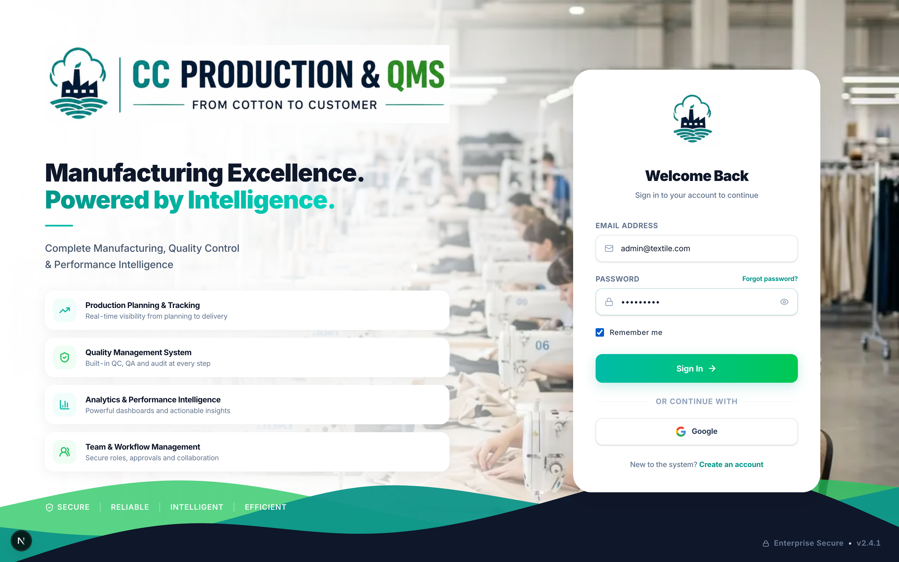
Other options on this screen
| Link / button | What it does |
|---|---|
| Forgot password? | Sends a reset request to the admin queue. An administrator must approve it before you get a reset link — it is not an automatic email. |
| Signs in with a linked Google account, if your installation has it configured. | |
| Create an account | Public sign-up. New accounts are created as Viewer (read-only). An admin must promote you to Manager or QC Officer before you can create anything. |
If the credentials are wrong you get a red banner reading Invalid email or password. Nothing is
locked — just retry.
After sign-in: the Dashboard
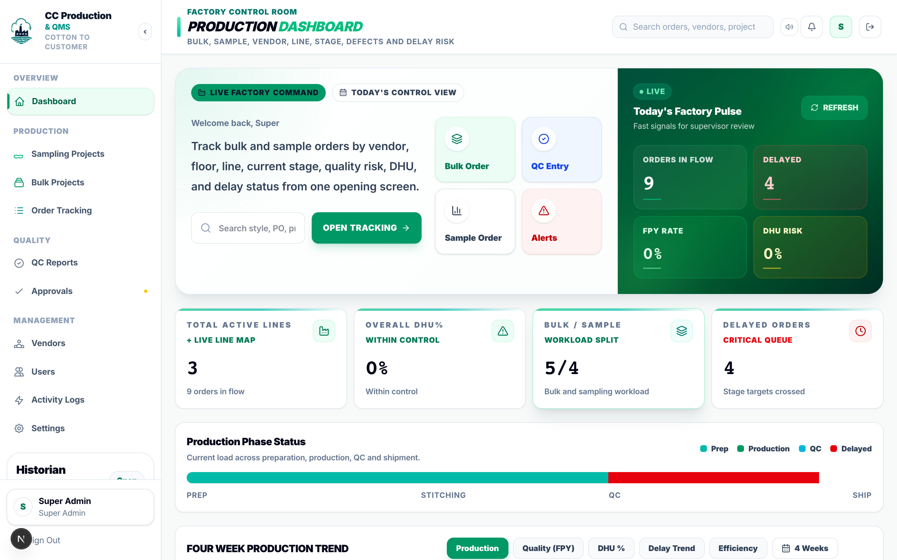
You arrive at the Production Dashboard. Read it left to right:
- Left sidebar — your navigation, grouped into Overview, Production, Quality and Management.
The items you see depend on your role. The ‹ button collapses it to icons. - Today's Factory Pulse (green panel) — live counts of orders in flow, delayed orders, FPY rate
and DHU risk. - Quick tiles — Bulk Order, QC Entry, Sample Order and Alerts jump straight into those areas.
- Historian (bottom of the sidebar) — the last few factory events; visible to Super Admin, Admin
and Manager only. - Top-right icons — global search, notifications, your profile initial, and sign-out.
For order work you will use only two sidebar links: Sampling Projects and Bulk Projects.
4. Step 1 — Create a Sample Class
A Sample Class is the folder that holds all prototype orders for one customer style programme.
Create it before any sample order.
Click Sampling Projects in the sidebar.
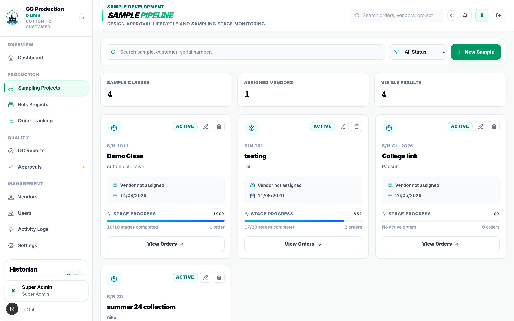
What is on this screen:
- Search box — searches sample name, customer and serial number.
- All Status filter — narrows by class status (active, completed, inactive).
- New Sample button — creates a class (hidden for Viewers).
- Three summary cards — total classes, how many have a vendor assigned, and how many match your
current filters. - One card per class showing serial number, name, customer, vendor, created date and a
Stage Progress bar. The bar is the average completion of all stages of all active orders in
that class, so a brand-new class reads 0%. - View Orders at the bottom of each card opens the orders inside that class.
Click New Sample. The create dialog opens empty:
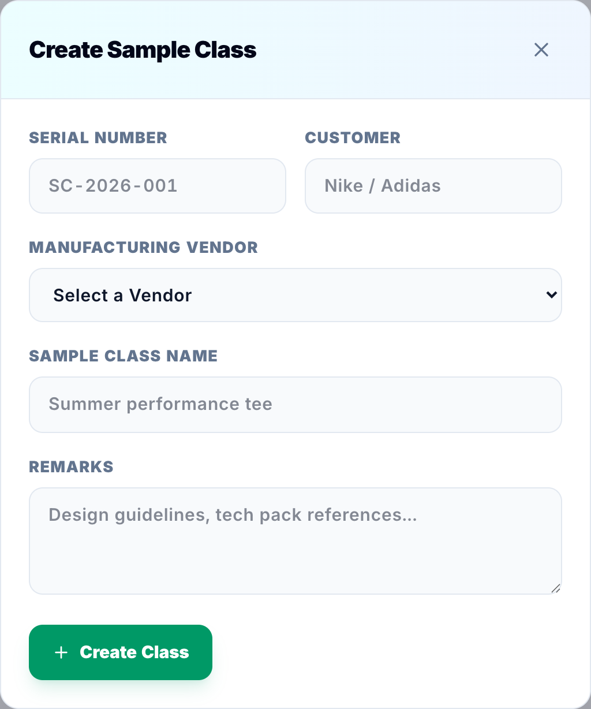
Fill it in:
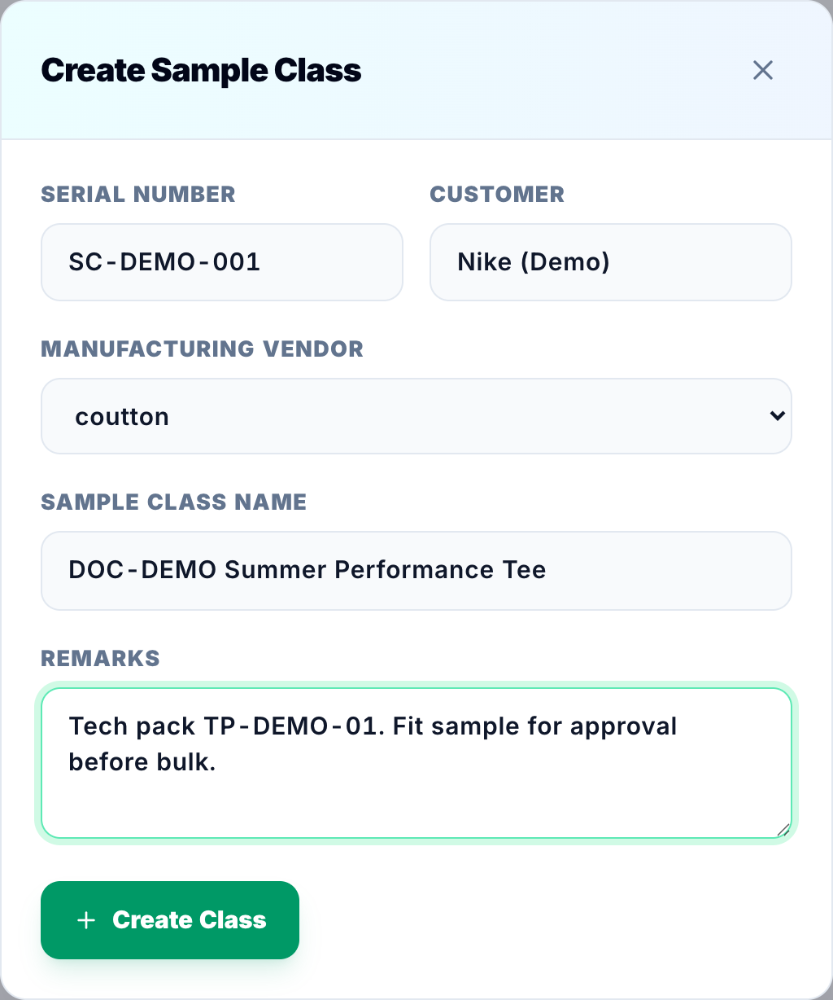
| Field | Required | What to enter |
|---|---|---|
| Serial Number | Yes | Your internal reference for the class, e.g. SC-2026-001. Searchable. |
| Customer | Yes | The buyer, e.g. Nike. Searchable. |
| Manufacturing Vendor | Yes | The factory. Only vendors you are allowed to use appear here. |
| Sample Class Name | Yes | A human name for the programme, e.g. Summer performance tee. Searchable. |
| Remarks | No | Free notes — tech pack references, design guidance, anything the team should see. |
Click Create Class. A green Mission Successful confirmation appears and closes itself after a
couple of seconds.
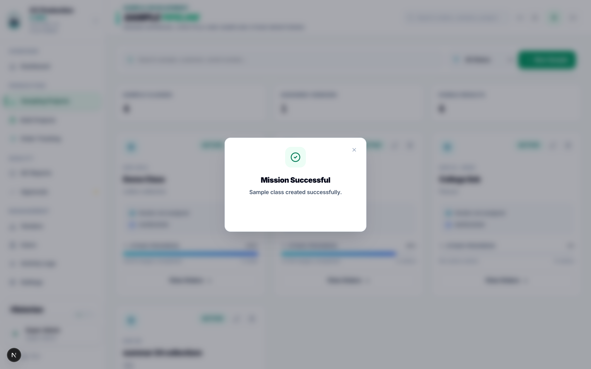
The new class now appears as a card in the grid:
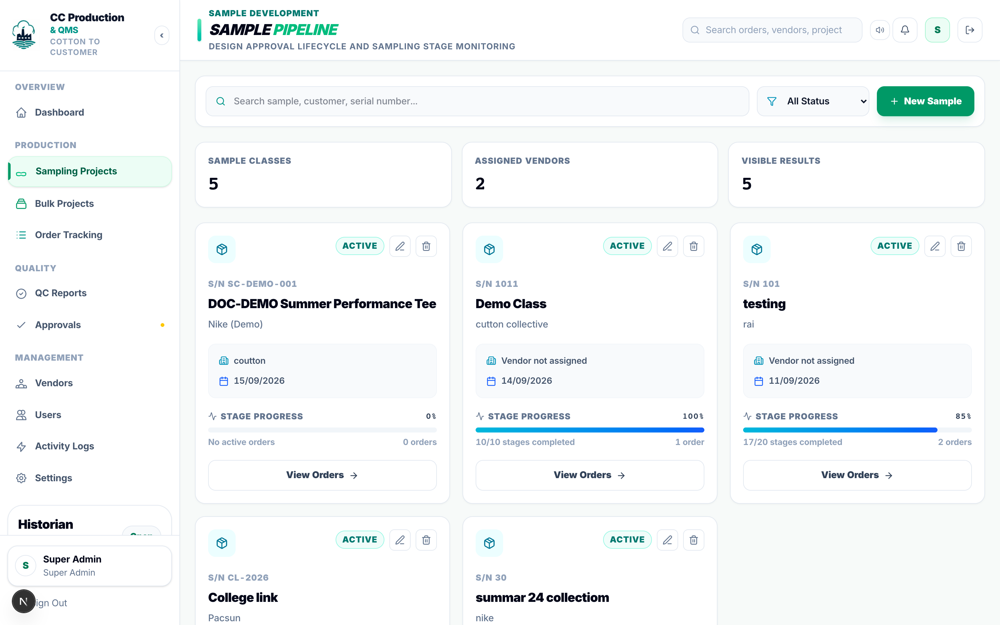
Export CSV: Click the Export CSV button in the top toolbar to instantly download a comprehensive CSV spreadsheet with product info, customer, vendor, stage progress, and latest stage update details.
5. Step 2 — Create a Sample Order (prototype)
Open the class you just created with View Orders. This is the order list for that class — empty
for a new class.
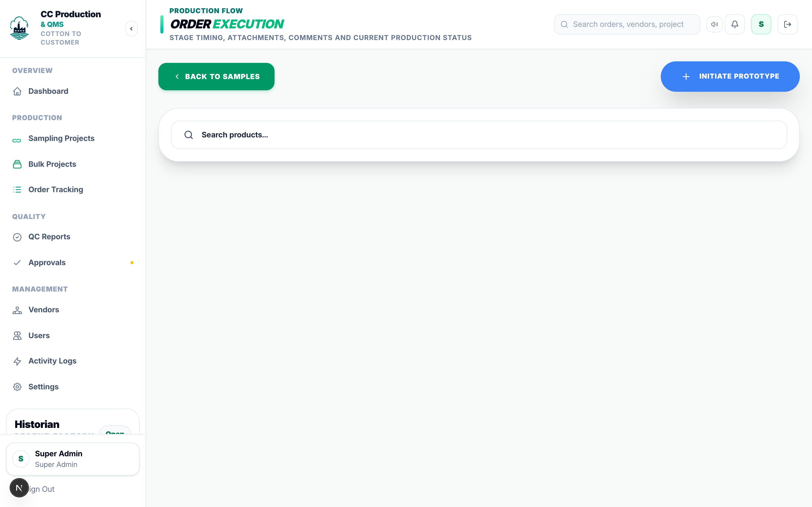
- Back to Samples returns to the class grid.
- Initiate Prototype creates a sample order inside this class.
- Search products… filters the cards by PO, style or product name.
Click Initiate Prototype.
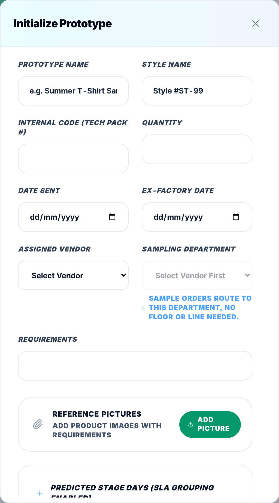
5.1 Product and schedule fields
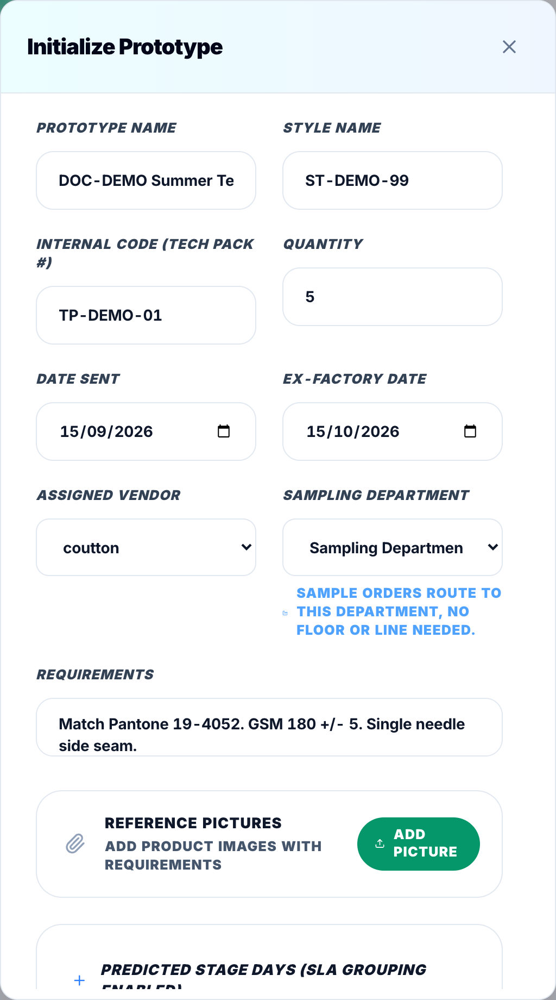
| Field | Required | Notes |
|---|---|---|
| Prototype Name | Yes | The product, e.g. Summer T-Shirt Sample. This is the title shown on the order card and order page for sampling. |
| Style Name | Yes | Style reference, e.g. Style #ST-99. |
| Internal Code (Tech Pack #) | No | Your tech pack or internal code. |
| Quantity | Yes | Number of sample pieces. |
| Date Sent | No | The day the job starts. This is the date all stage target dates are calculated from. Leave it blank and the system counts from today. |
| Ex-Factory Date | No | The promised delivery date. Once this date passes and the order is not complete, the order is flagged delayed and every unfinished stage turns red. |
| Assigned Vendor | Yes | The factory making the sample. Changing it resets the department choice. |
| Sampling Department | Yes | Pick the vendor's sampling department. Sample orders go to a department, not to a floor or line. If the vendor has none, the system creates a default "Sampling Department" automatically. |
| Requirements | No | Written specification — Pantone, GSM, stitching notes, tolerances. Visible to everyone on the order. |
5.2 Reference pictures
Click Add Picture in the Reference Pictures box and choose one or more image files
(JPG, PNG, WebP — PDFs are rejected here).
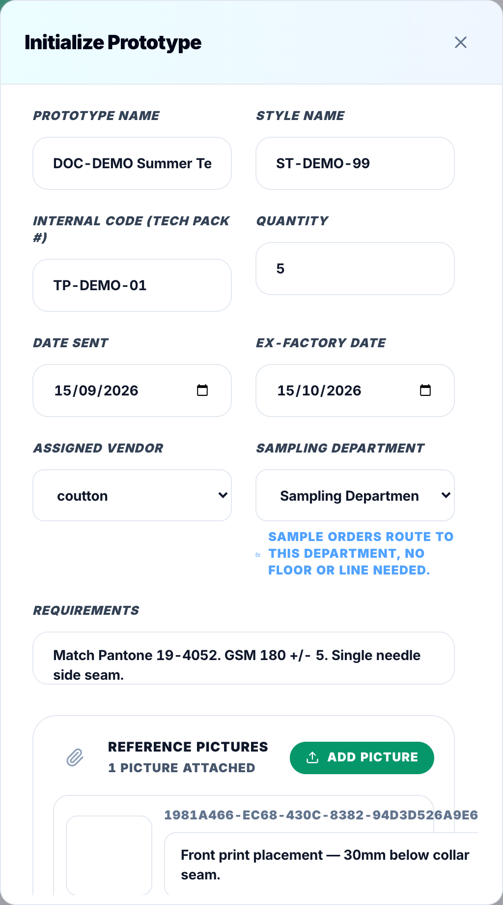
Each picture gets its own requirement text box. Use it to say what the picture proves —
"front print placement 30mm below collar seam". The first picture also becomes the order's main
reference image. The × removes a picture.
5.3 Predicted Stage Days — how the schedule is built
This panel is the most important part of the form. It decides which stages exist and when each
one is due.
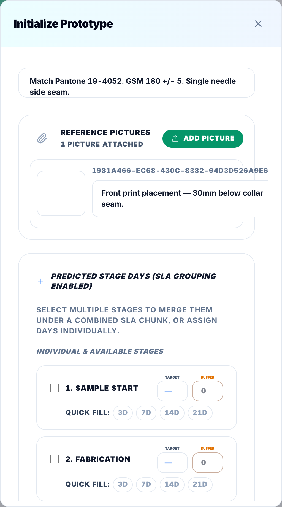
The ten sampling stages are listed in order. Each row has:
- a checkbox (used only for merging, see below),
- Target — how many days that stage should take,
- Buffer — extra contingency days,
- Quick fill buttons (3d / 7d / 14d / 21d) as shortcuts.
Two rules you must know:
- A stage with Target = 0 is not created at all. Only stages with days (or stages inside a merged
chunk) become part of the order. If you leave everything at 0 the form refuses to submit with
"Add predicted days for at least one sample stage." - Target days are cumulative. The system starts at Date Sent and adds each stage's target days
in sequence, so stage 1's target date is Date Sent + its days, stage 2's is that date plus its own
days, and so on. Buffer days are recorded separately and do not move the target dates — they
are visible contingency, shown as+2d buf, not extra schedule.
Fill in days for every stage you want:
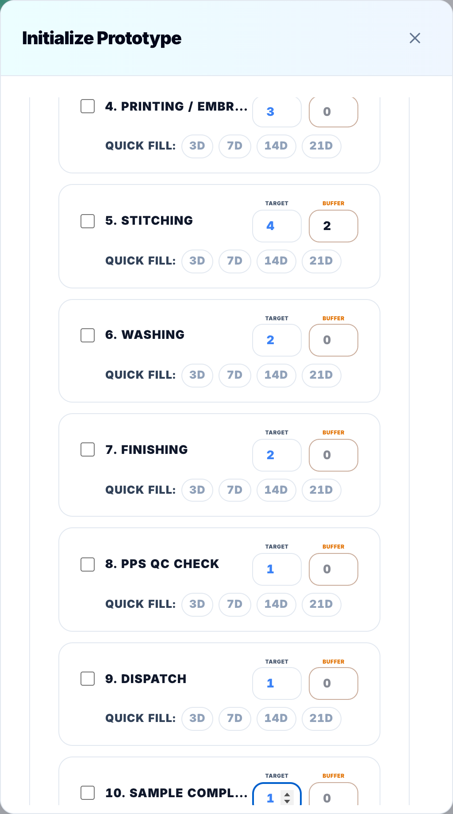
Merging stages into one SLA chunk (optional): tick two or more stages, click
Merge Selected (n), enter the total days for the group and confirm. The group then shares one
deadline instead of each stage having its own, and the rows show SLA Managed by Parent Chunk.
Unmerge dissolves it. This is shown in detail in the bulk section
(§11.3) — it works identically on both tracks.
"⚠️ You exceed X day(s) to Ex-Factory date!"
The system locks the submit button with
Exceeds Ex-Factory Date by Xd until stage days or the Ex-Factory date are adjusted.5.4 Submit
Click Launch Track at the bottom. The sample order is created and you are taken straight to its
detail page.
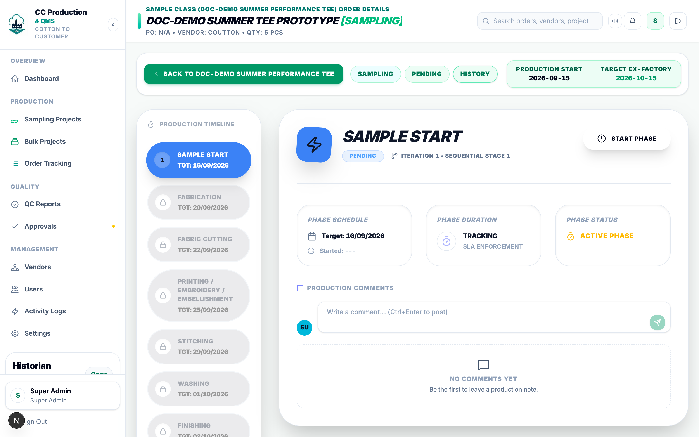
Read this page as three columns:
- Top bar — back button, the track (
sampling), the order status (pending), a History
button, and on the right the Production Start and Target Ex-Factory dates. - Production Timeline (left) — every stage as a pill, numbered, with its target date.
Stage 1 is open and selected; every later stage shows a padlock. - Stage panel (right) — the selected stage, its schedule, status, and the action buttons.
6. Step 3 — Run the sample stages
Stages run strictly in order. You cannot touch stage 3 until stage 2 is completed. Each stage
moves through three states: pending → in_progress → completed.
6.1 Start a stage
Select the stage in the timeline (only unlocked stages can be selected) and click Start Phase.
A confirmation appears:
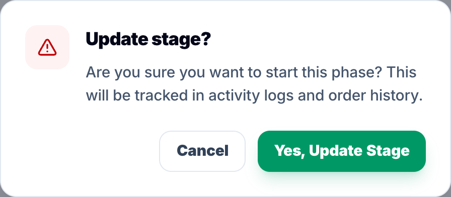
Click Yes, Update Stage. Every stage action is deliberately confirmed like this, because each one
is written to activity logs and order history.
The stage is now in_progress: its start timestamp is recorded and the button changes to
Confirm Completion.
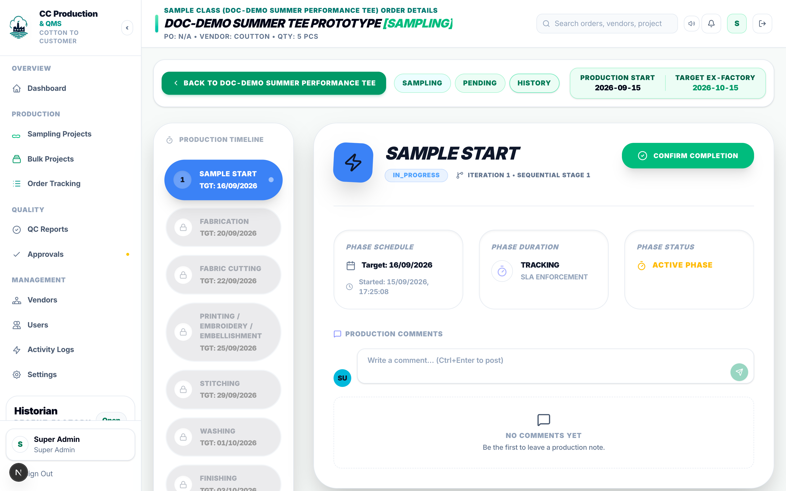
6.2 Log what happened — production comments
Every stage has its own Production Comments thread. Use it for the running record: what was
received, what went wrong, who was told.
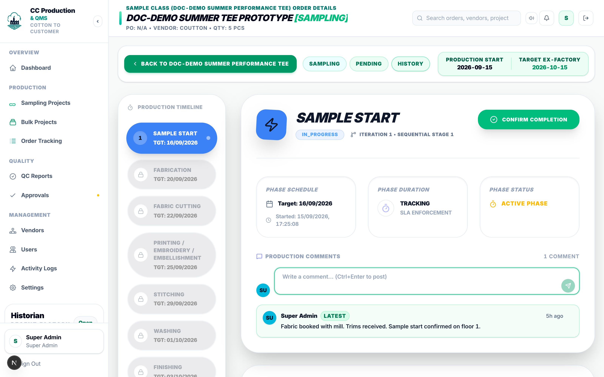
Type in the box and press Ctrl+Enter (or click the send arrow). Comments are per stage, stamped
with your name and time. They are the cheapest way to make a job auditable — use them generously.
6.3 Complete a stage
Click Confirm Completion and confirm. The completion date is stamped, the pill turns green with a
tick, and the system automatically selects the next stage for you.
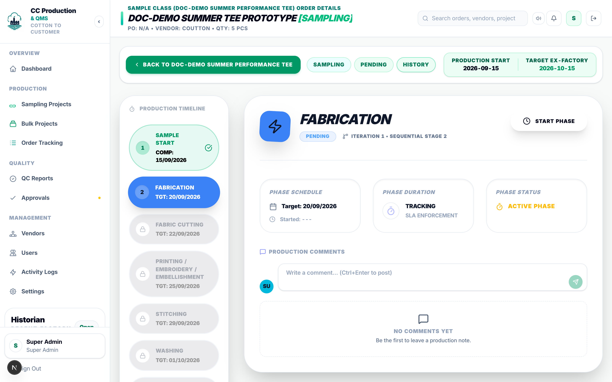
Work down the timeline this way. As stages complete, the timeline fills with green:
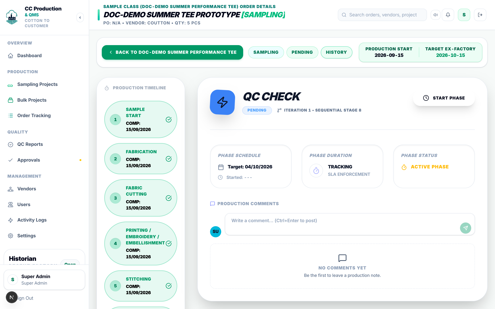
6.4 Reading the timeline colours
| Appearance | Meaning |
|---|---|
| Grey with a padlock | Locked — an earlier stage is not complete yet. Cannot be selected. |
| Blue / green filled (selected) | The stage you are currently looking at. |
| Green with a tick | Completed. Shows COMP: <date>. |
| Red with a warning icon | Past its target date and not complete, or the order's ex-factory date has passed. |
| Amber with a padlock + GATED | Blocked by an unresolved conditional defect (bulk only — see §13). |
+2d buf |
That stage has buffer days recorded on top of its target. |
If you select a stage whose predecessor is unfinished, the panel shows
"Stage Locked: Previous phase must be marked as COMPLETED first." — that is expected, not an error.
Other things on the stage panel:
- Phase Schedule — target date, start timestamp, and buffer if any.
- Phase Status — Active Phase or Completed.
- Iteration n • Sequential Stage n — which rework round you are in and the stage's position.
- Phase Documents (bottom of the page) — Add Phase Data uploads a PDF or image against the
whole order (test reports, measurement sheets). Only PDF, JPG, PNG and WebP are accepted.
7. Step 4 — The PPS QC Check decision
Stage 8 of the sampling flow, PPS QC Check, is the quality gate. It does not have a plain
"complete" button. Start the stage as usual and you get a QC Decision panel with three choices:
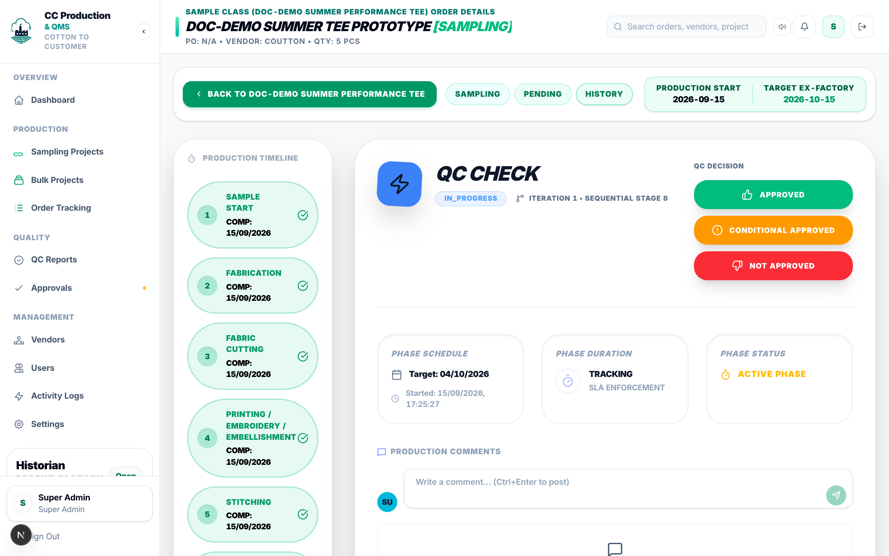
| Decision | Effect |
|---|---|
| Approved (green) | Stage is completed and the order advances normally. |
| Conditional Approved (amber) | Stage is completed but a condition is recorded against it. On the sampling track this is a note; on the bulk track it also locks a downstream stage. |
| Not Approved (red) | Stage is rejected. The order starts a new iteration and production repeats from a stage you choose. |
7.1 Approved
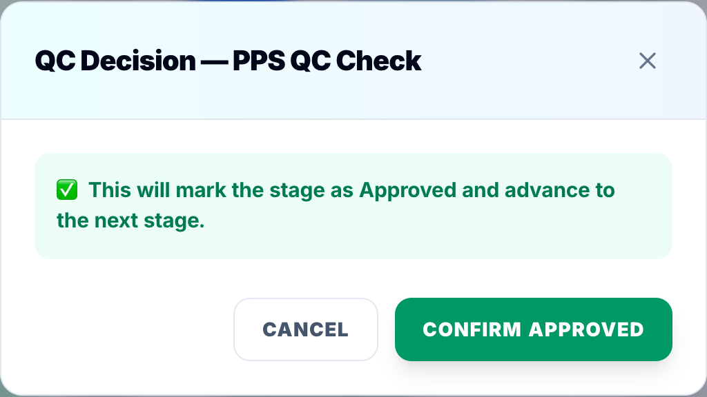
Nothing to fill in. The dialog tells you exactly what will happen. Click
Confirm approved.
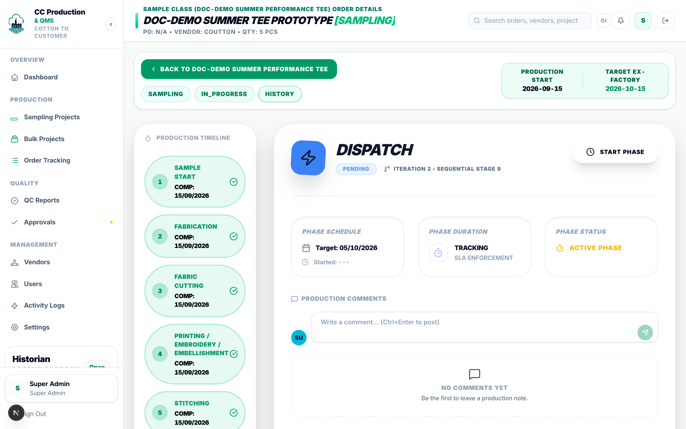
7.2 Conditional Approved
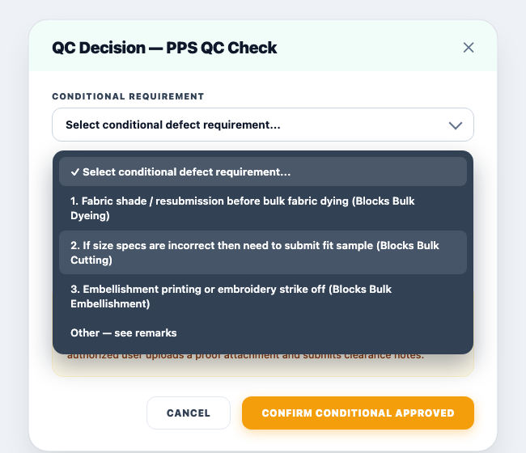
You must pick a Conditional Requirement from the list:
| Option | What it gates (bulk track) |
|---|---|
| Fabric shade / resubmission before bulk fabric dying | Blocks the dyeing stages |
| If size specs are incorrect then need to submit fit sample | Blocks bulk fabric cutting |
| Embellishment printing or embroidery strike off | Blocks printing / embroidery / embellishment |
| Other — see remarks | Recorded as a custom condition, no automatic block |
The stage completes and production continues, but the condition stays attached to the order until
someone clears it with proof. See §13.
7.3 Not Approved
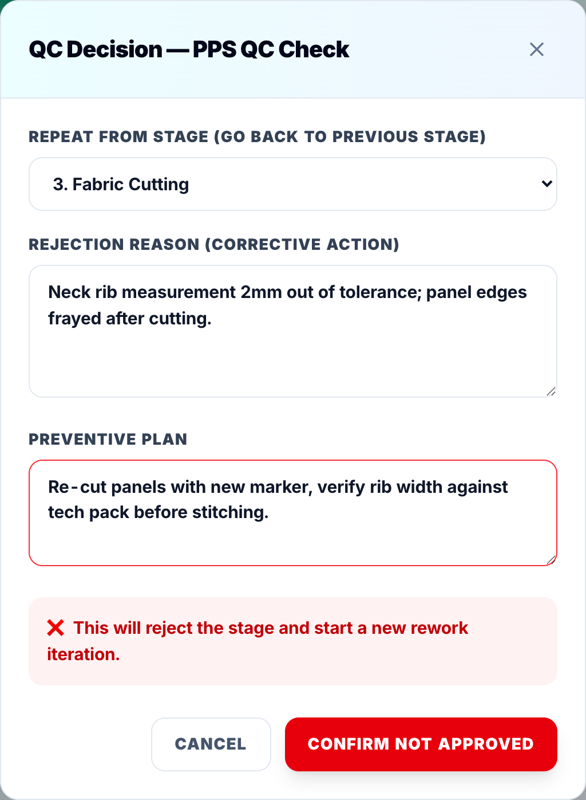
Three inputs:
| Field | Required | Notes |
|---|---|---|
| Repeat From Stage | Yes | On the sampling track you may choose any stage at or before QC Check — pick the stage where the fault was actually introduced. On the bulk track a stage can only repeat itself. |
| Rejection Reason (Corrective Action) | Yes | What is wrong. This becomes the CA record. Rejection is refused without it. |
| Preventive Plan | No (but expected) | How you will stop it recurring. This becomes the PA record. |
Click Confirm not approved.
8. Step 5 — Rejection, iterations, CA & PA
When a stage is rejected, the system does four things at once:
- Increases the order's iteration counter (Iteration 1 → 2).
- Resets the chosen repeat-from stage and everything after it back to pending, clearing their
start and completion dates. - Writes the reason and plan into the permanent rejection log.
- Puts the order back to in_progress and re-points it at the repeat-from stage.
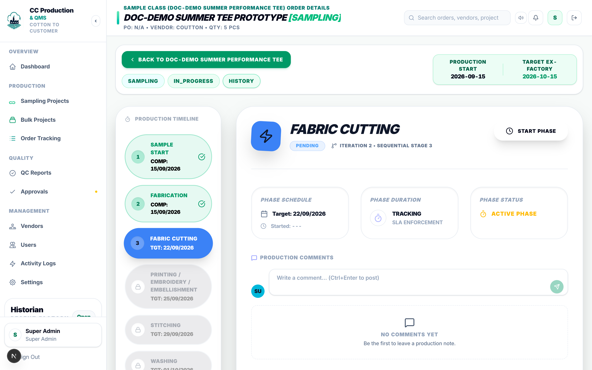
Scroll down the stage panel to find the QC Rejection Log:
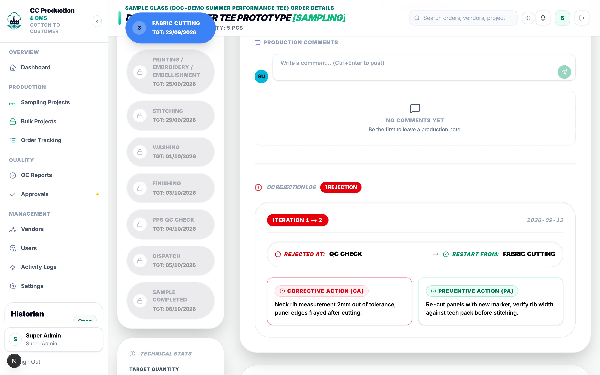
Each entry records the iteration jump, the date, Rejected At, Restart From, and the two
cards every audit asks for:
- Corrective Action (CA) — red card, the defect found.
- Preventive Action (PA) — green card, the fix that prevents recurrence.
The log is append-only. It is never overwritten by later iterations, so a style rejected three times
shows all three rounds. This is your CA/PA evidence — write it properly the first time.
raise a rejection. On the bulk track only PP Sample Development, Small Vet Dying,
Full Flag Dying Production and Final Random Inspection can. Elsewhere you will see only a
completion button, and the API refuses with "Rejection is only permitted on designated
inspection/approval stages."
After a rejection, re-run the repeated stages exactly as before: start, comment, complete. When you
reach QC Check again you get the same three choices — approve it this time and carry on.
9. Step 6 — Sample completed → Move to Bulk
When every stage is completed, the system automatically sets the whole order to completed.
You do not mark the order complete yourself.
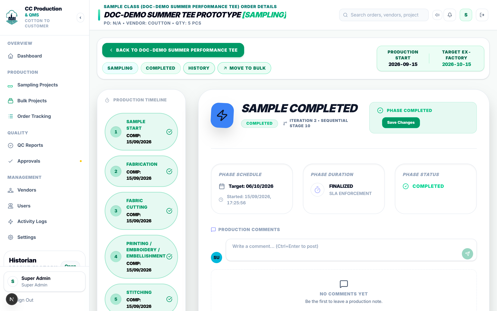
Note what changed in the top bar: the status chip reads COMPLETED and a new
↗ MOVE TO BULK button has appeared. It only exists on a sampling order that is completed.
9.1 Promoting the sample to a bulk order
Click Move to Bulk. A five-part form opens, pre-filled from the sample:
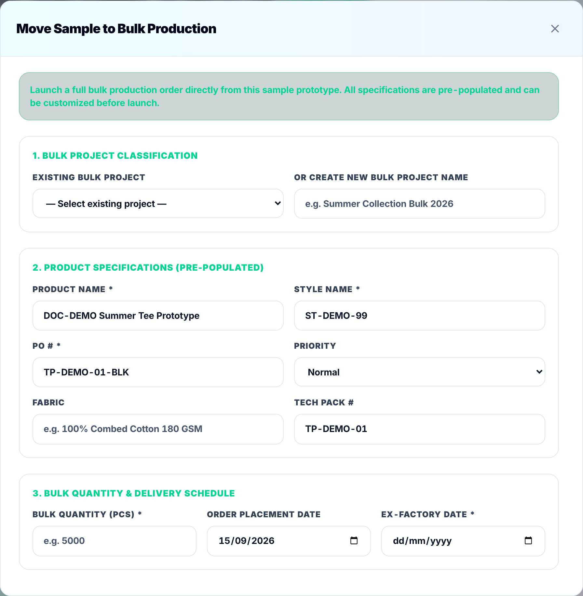
1. Bulk Project Classification — either choose an Existing Bulk Project from the dropdown,
or type a name in OR Create New Bulk Project Name and the project is created for you. One of
the two is required.
2. Product Specifications — Product Name, Style Name, PO #, Priority, Fabric, Tech Pack #.
Pre-filled from the sample where available.
<sample PO>-BLK;if it did not, the system suggests one from the tech pack or style name instead. Overwrite the
suggestion with the real purchase order number before launching.
3. Bulk Quantity & Delivery Schedule — Bulk Quantity and Ex-Factory Date are both
required. Order Placement Date defaults to today and drives the new stage schedule.
4. Assigned Vendor & Floor Lines — pick the vendor, then tick floors and lines. A floor ticked
with no lines selected means the whole floor.
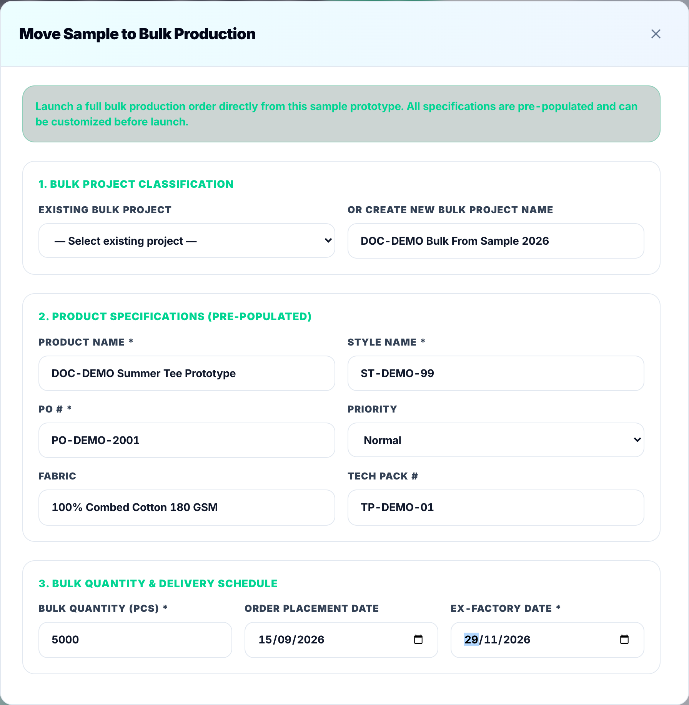
5. Requirements, reference pictures and the bulk SLA — the sample's reference pictures are
carried over. Below them the full 15-stage bulk pipeline is laid out with sensible default days
that you can adjust, merge into chunks, or give buffer to.
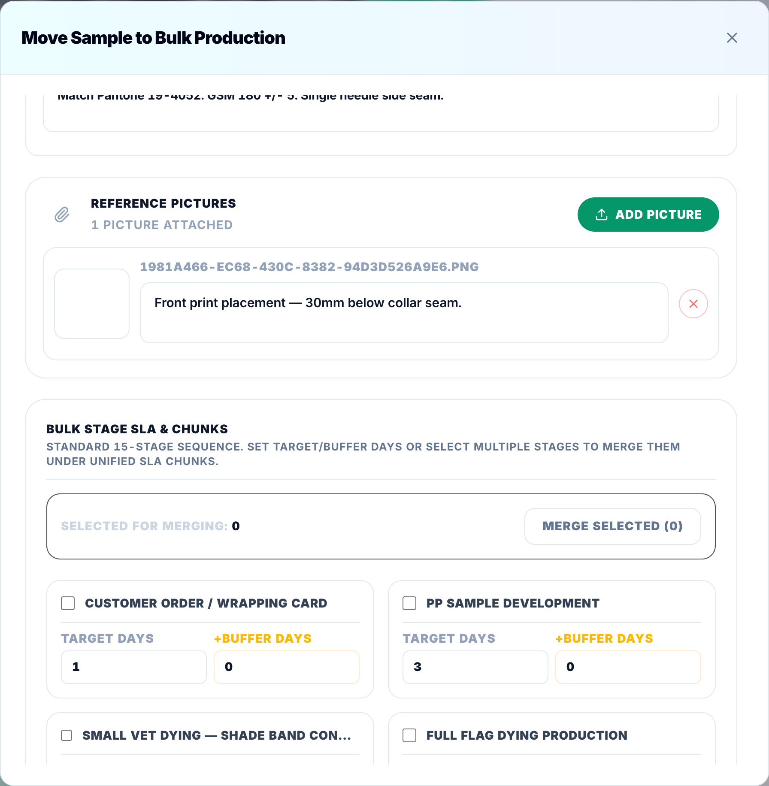
Click Launch Bulk Production Order →. A brand-new bulk order is created, linked back to the
sample it came from, and you are taken to it:
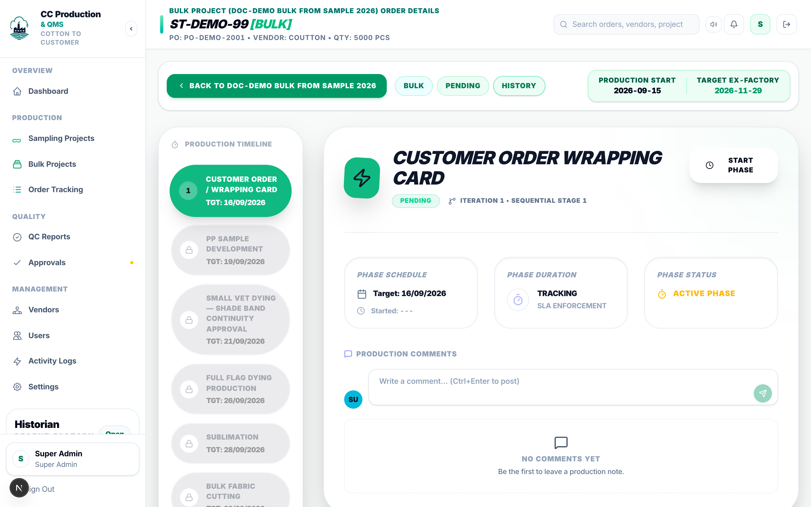
The original sample order is untouched and stays completed. The bulk order starts at stage 1 with
all 15 stages pending.
"Only completed sample orders can be promoted to bulk."
10. Step 7 — Create a Bulk Project
A Bulk Project is the bulk-side equivalent of a Sample Class: the folder that holds the POs for
one production programme.
Click Bulk Projects in the sidebar.
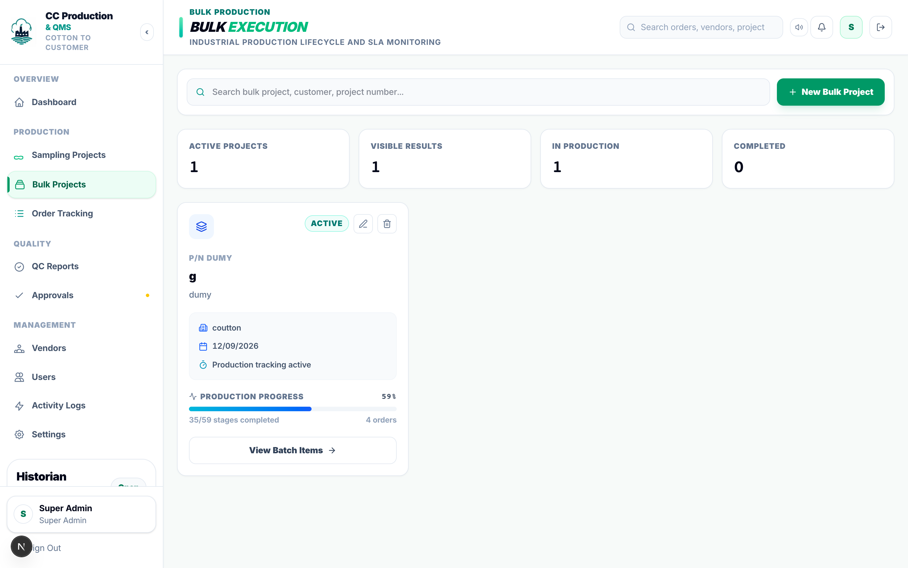
Four summary cards sit above the grid: Active Projects, Visible Results, In Production
and Completed. Each project card shows the project number, name, customer, the vendors actually
used by its orders, a Production Progress bar, and View Batch Items to open its orders.
Click New Bulk Project:
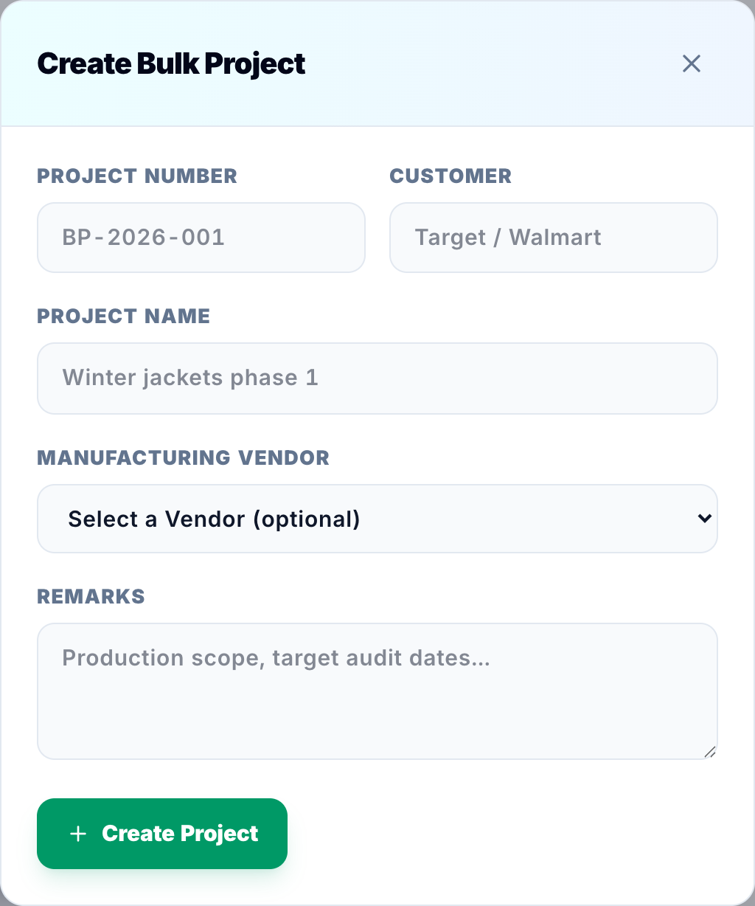
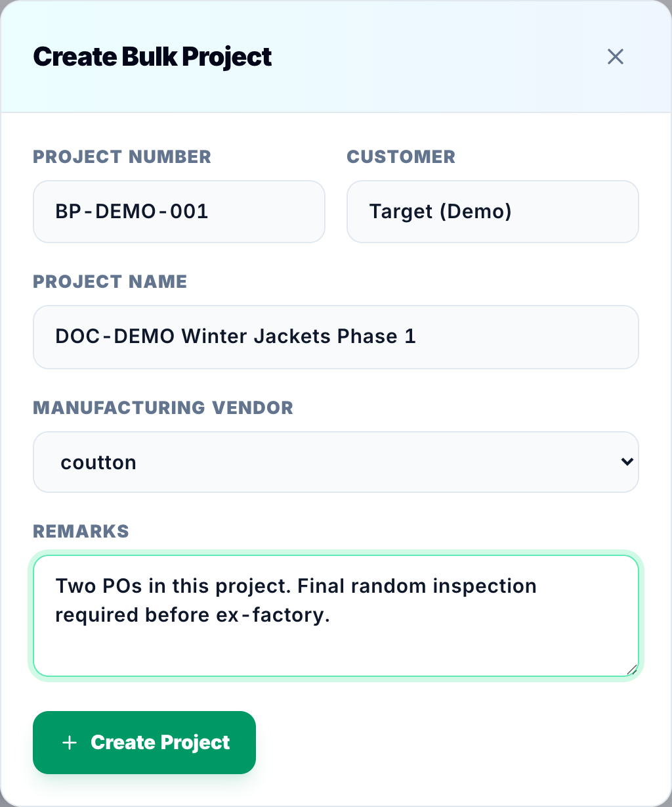
| Field | Required | Notes |
|---|---|---|
| Project Number | Yes | e.g. BP-2026-001. Searchable. |
| Customer | Yes | e.g. Target. Searchable. |
| Project Name | Yes | e.g. Winter jackets phase 1. |
| Manufacturing Vendor | No | Optional here — each order picks its own vendor, so one project can span several factories. |
| Remarks | No | Scope, target audit dates, notes. |
Click Create Project. The card appears in the grid:
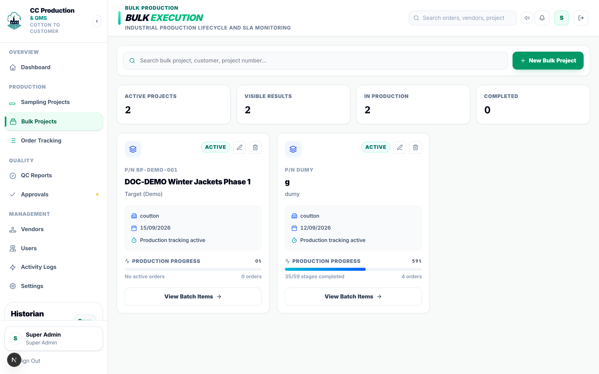
Export CSV: Click the Export CSV button in the top toolbar to download an Excel-compatible report of all bulk projects with customer, vendors, stage completion progress, and latest stage update details.
11. Step 8 — Register Style POs (bulk orders)
Open the project with View Batch Items:
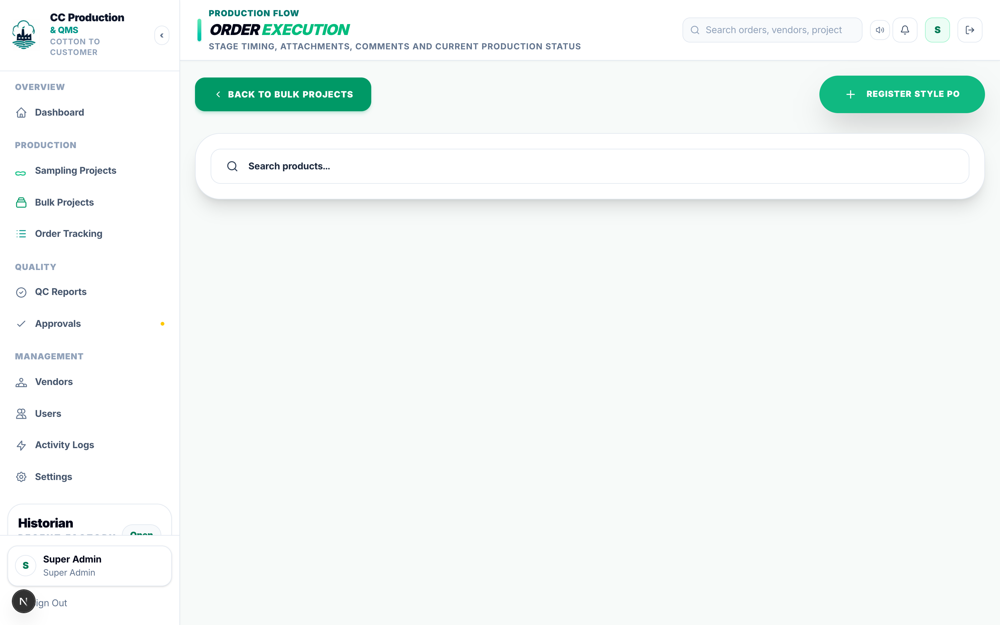
Click Register Style PO. The dialog is titled Add Products, and this is the key difference
from sampling: you can register several POs in one submit. Each one is a Product Batch.

11.1 Per-batch fields
| Field | Required | Notes |
|---|---|---|
| Product Name | Yes | The product for this batch. |
| PO # | Yes | The purchase order number. Shown on the card as PO: …. |
| Style Name | Yes | The style reference, e.g. WJ-DEMO-M-2026. This becomes the order's title on the card and the order page, and it is required later by Reorder — so fill it properly now. |
| Quantity | Yes | Pieces for this PO. |
| Ex-Factory Date | Yes | Delivery date for this PO. Required on bulk (unlike sampling). |
| Vendor | Yes | The factory for this batch. Changing it clears the floor selection. |
| Floors & Lines | No | Where the work will run. |
| Reference Pictures | No | Per-batch images, each with its own requirement note. |
Floors & Lines loads once a vendor is chosen:
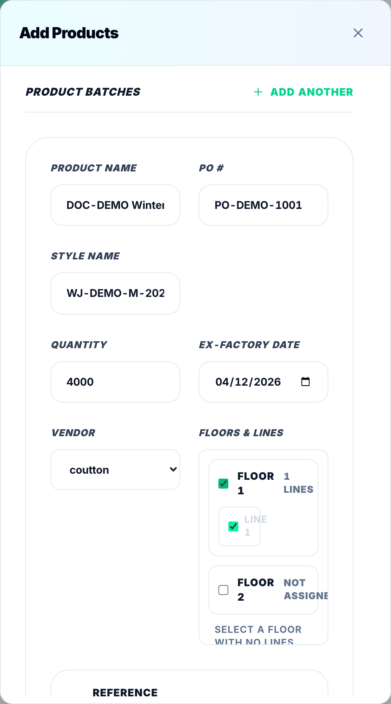
- Tick a floor to assign it.
- Then tick individual lines under it to use only those lines.
- Tick the floor and leave every line unticked to book the whole floor.
- Assigned floors and lines are marked occupied for capacity tracking.
- Sample orders never use this — they go to the sampling department instead.
11.2 Adding more batches
Add Another appends a second product block; the bin icon in its corner removes it. All batches
created in one submit share the project, the stage pipeline and the SLA settings below, but keep
their own product, PO, quantity, date, vendor and floors.
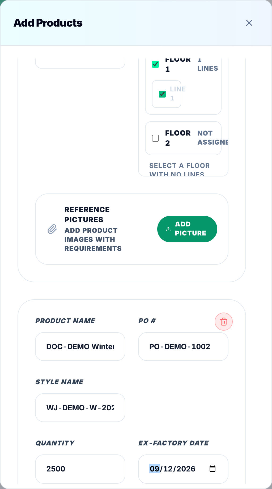
11.3 Stage days and SLA chunks
Below the batches is the same Predicted Stage Days panel, this time listing the 15 bulk
stages. The rules are identical: 0 days means the stage is not created, target days accumulate
from the start date, and buffer days are recorded separately without moving dates.
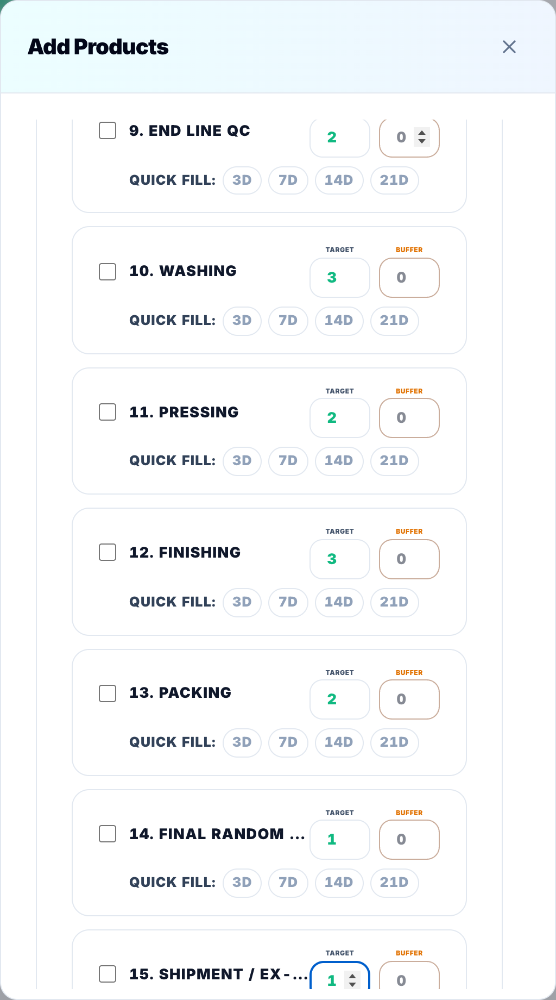
Merging stages into one SLA chunk. Use this when the floor treats several steps as one block of
time. Tick two or more stages — a Merge Selected (n) button appears:
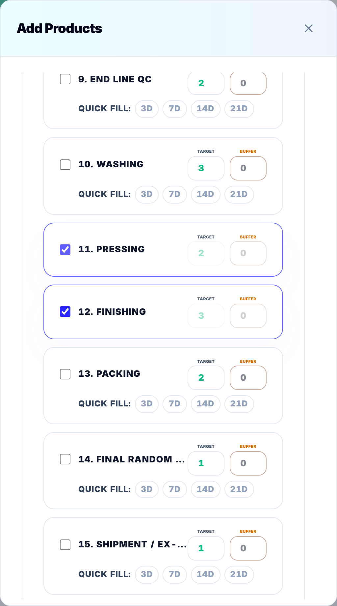
Click it and enter the total target SLA days and buffer days (contingency time) for the whole group:
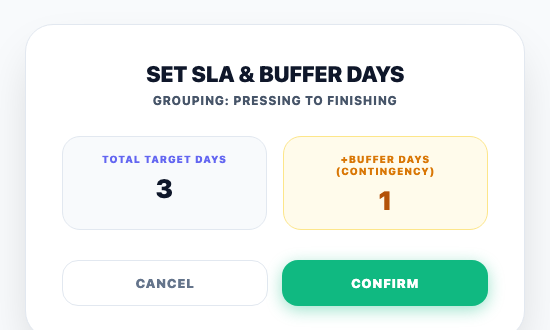
Confirm, and the group becomes a Merged Chunk. It is named automatically from its first and last
stage ("Pressing to Finishing"), shows Total Chunk SLA Days and +Buffer Days (both editable),
lists the stages it contains, and offers Unmerge. The merged stages disappear from the individual
list because their timing is now managed by the chunk.
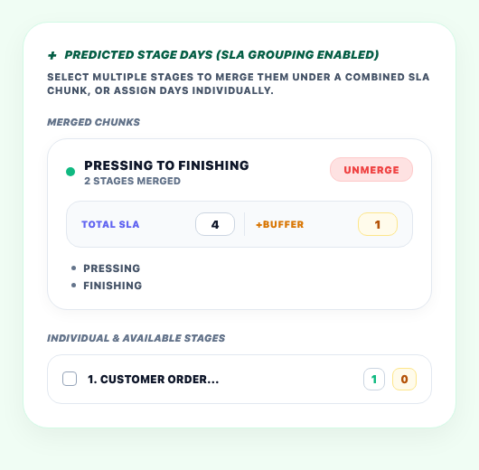
On the order page later, a chunk appears in the timeline as a bordered block labelled e.g. 4D CHUNK
containing its stages.
11.4 Submit
Click Launch Track. Every batch becomes its own bulk order, each with its own full stage
pipeline:

Each card shows the PO, vendor, Stage Progress (0 / 15 stages), delay state, and the
Edit / History / Delete actions.
back to the product name so it is never untitled, but add the real style via Edit when you see
one — it is what the order page and reorder both use.
12. Step 9 — Run the 15 bulk stages
Click a card to open the order.
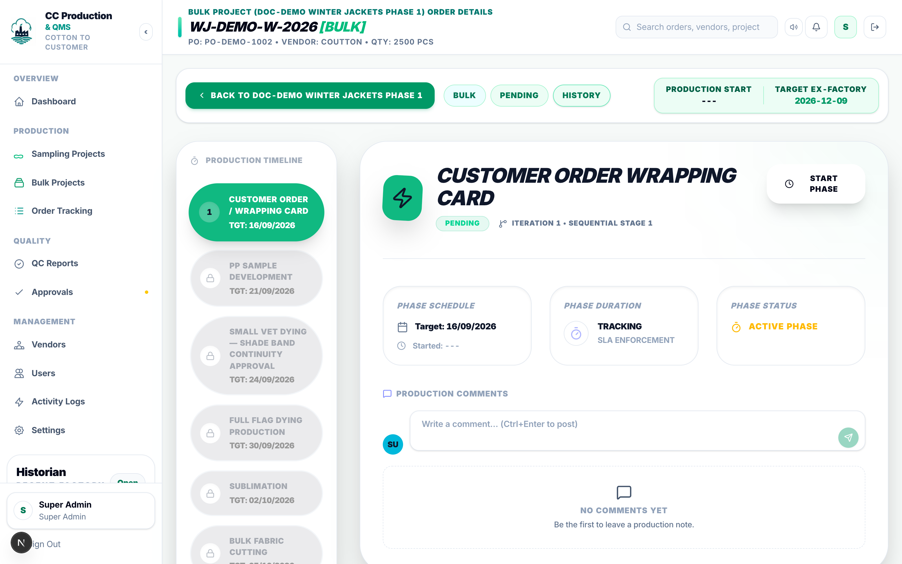
The page is the same as the sampling one, with the 15-stage pipeline in the timeline. Stage 1,
Customer Order / Wrapping Card, is open; everything else is padlocked.
Running an ordinary bulk stage is exactly as on the sampling track: Start Phase → confirm →
work → Complete Stage → confirm.
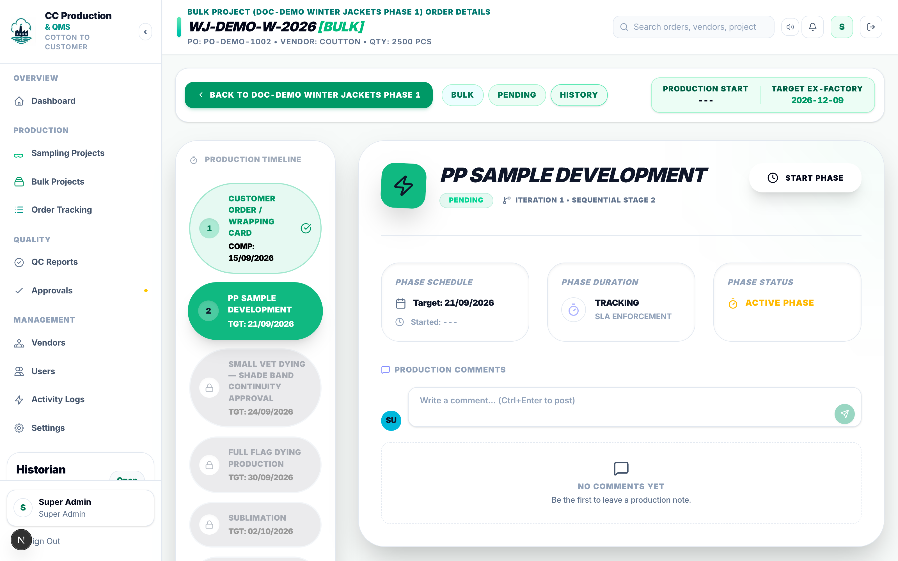
What differs on the bulk track is that four stages are quality gates:
| Stage | Buttons you get |
|---|---|
| PP Sample Development (stage 2) | Three: Approved / Conditional Approved / Not Approved |
| Small Vet Dying — Shade Band Continuity Approval | Two: Accept / Reject |
| Full Flag Dying Production | Two: Accept / Reject |
| Final Random Inspection | Two: Accept / Reject |
| Every other stage | One: Complete Stage |
13. Step 10 — Conditional approval & defect gating
This is the part of the system people most often get stuck on, so follow it closely.
Start PP Sample Development. You get the three-option QC panel:
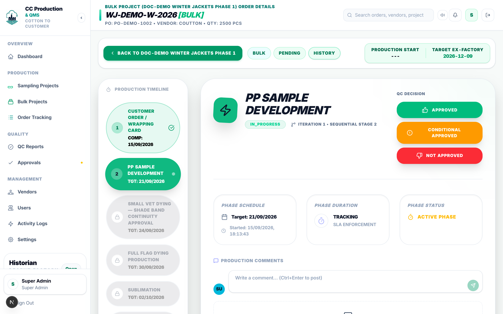
Choose Conditional Approved and pick the requirement:
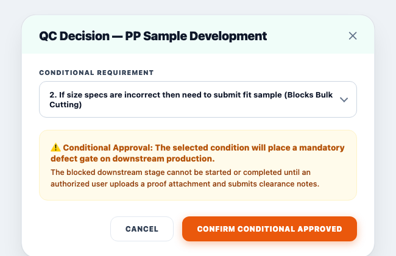
The dialog spells out the consequence: the chosen condition "will place a mandatory defect gate on
downstream production". Confirm it.
The stage completes — but an amber banner is now attached to it:
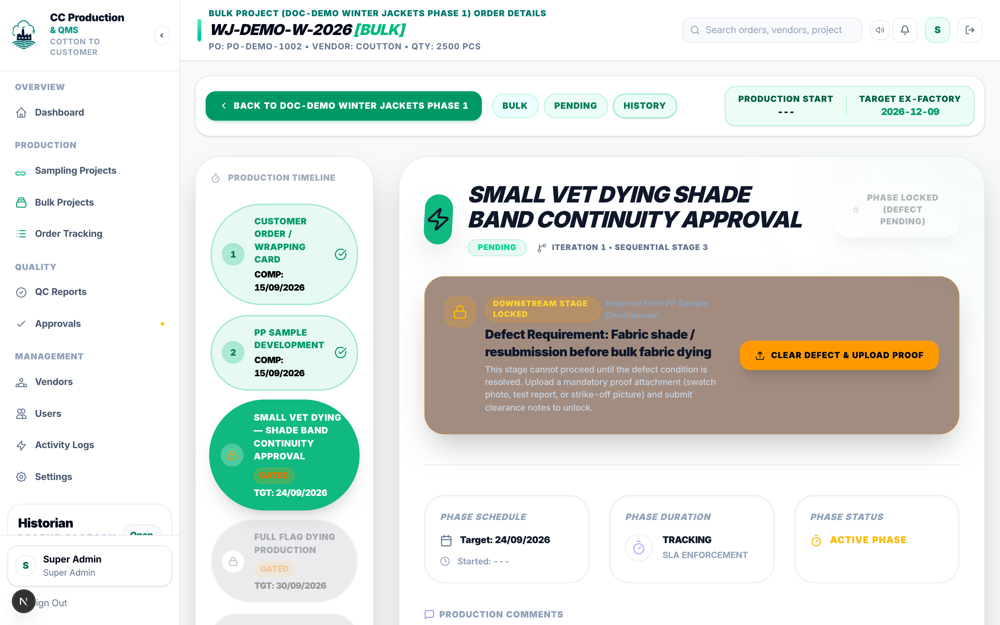
Production continues, except for the stages the condition gates. Select the gated stage and you
see this:
Three things to notice:
- In the timeline, the gated stages carry an amber GATED badge and a padlock.
- The action button is replaced by Phase Locked (Defect Pending) — it cannot be started or
completed, and the API refuses too, so there is no way around it. - An amber panel states the exact defect requirement and which stage it came from, with a
Clear Defect & Upload Proof button.
13.1 Clearing the defect
Click Clear Defect & Upload Proof:
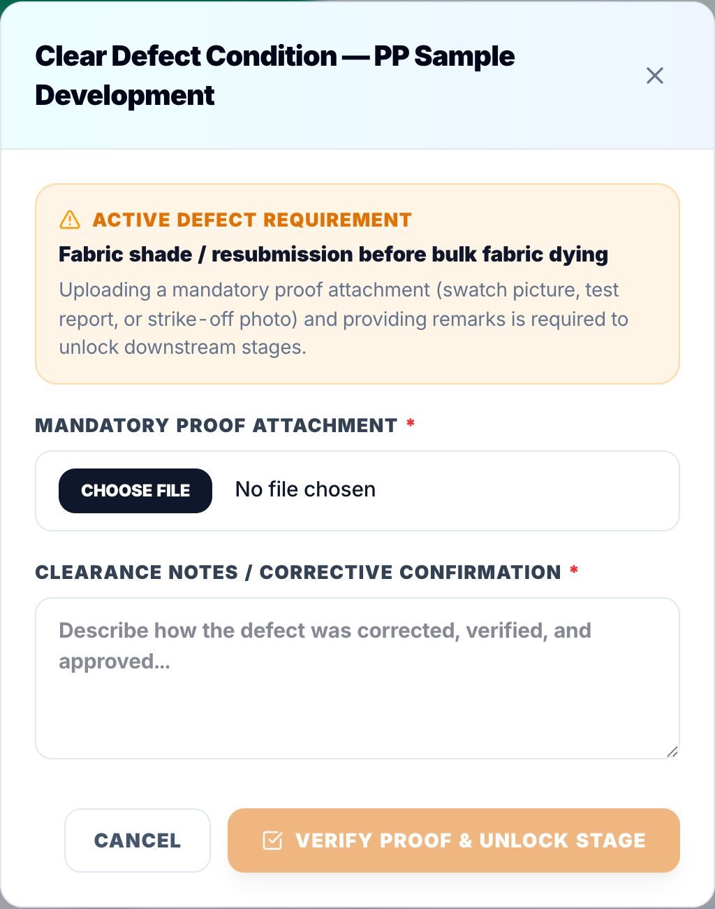
Both inputs are mandatory — the system will not accept one without the other:
| Input | Requirement |
|---|---|
| Mandatory Proof Attachment | One file: PNG, JPG, WebP or PDF. A swatch photo, lab-dip report or strike-off picture. |
| Clearance Notes / Corrective Confirmation | Written confirmation of how the defect was corrected and verified. |
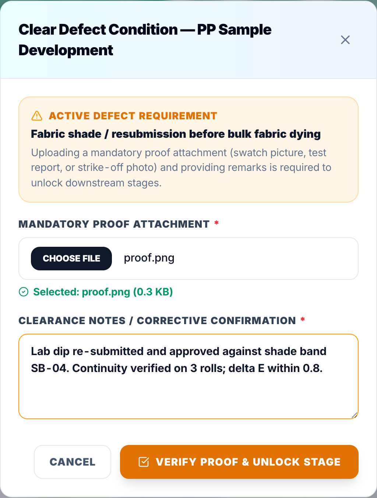
Click Verify Proof & Unlock Stage. The gate lifts immediately:
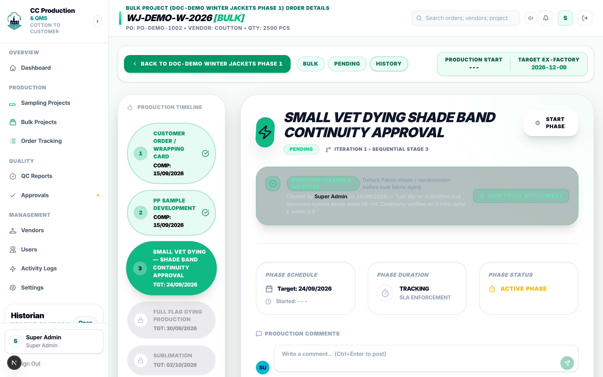
The banner turns green — Condition Cleared & Unlocked — recording who cleared it, when, and the
notes, with View Proof Attachment to open the evidence. The GATED badges are gone and
Start Phase is available again. The proof is also filed in the order's attachments as
[Clearance Proof]
it twice returns "Condition is already cleared."
13.2 Accept / Reject on a dying stage
With the gate cleared, start the dying stage. Because it is an inspection stage, you get
Accept and Reject:
Reject opens the rework dialog:
| Field | Notes |
|---|---|
| Repeat From Stage | On bulk this is locked to the same stage — a rejected bulk stage repeats itself. The dropdown therefore contains only that one option. |
| Rejection Reason | Required. Becomes the CA record. |
| Correction Plan | Becomes the PA record. |
Start Rework Iteration bumps the iteration counter and resets that stage to pending, exactly as
on the sampling track, and the entry appears in the QC Rejection Log.
14. Step 11 — Inspection stages, completion & Reorder
Final Random Inspection (stage 14) is the last quality gate before shipment:
Accept it, complete Shipment / Ex-Factory, and the order flips to completed automatically:
A ↻ REORDER button now appears — the bulk equivalent of Move to Bulk. It clones a finished
order into a new one so a repeat buy does not have to be typed from scratch.
14.1 Creating a reorder
The form has five numbered sections, all pre-filled from the original order:
- Bulk Project Classification — the original order's project is already selected. Change it, or
name a new project, if the repeat belongs somewhere else. - Product Specifications — Product Name, Style Name, PO # (suffixed
-ROautomatically),
Priority, Fabric, Tech Pack #. - Reorder Quantity & Delivery Schedule — new quantity and a new Ex-Factory Date (both required).
- Assigned Vendor & Floor Lines — carried over; change the factory or lines if the repeat runs elsewhere.
- Stage Pipeline & SLA Schedule — the original stage days are pre-loaded; adjust, buffer or merge as needed.
If you clear a required box, the form tells you exactly which one instead of failing quietly:
Click ↻ Create Reorder →. A new bulk order is created, linked to the original, and opened:
15. Everyday order actions
Every order card carries the same action row:
Edit an order
Edit changes Product Name, Style Name, PO #, Quantity, Ex-Factory Date, Priority, Assigned Vendor,
reference pictures — and, for Super Admins only, the Sample Class / Bulk Class the order belongs
to. Use it to add the missing Style Name on bulk orders.
Editing an order does not rebuild the stage schedule. Stage days are set at creation.
History
History shows the complete audit trail of the order — creation, every field change, every stage
start and completion, approvals, rejections, condition clearances and attachments — with who did it
and when. It merges order history and activity-log entries into one time-ordered list.
Cancel an order
Delete does not erase anything. It sets the order to cancelled and deactivates it, so it
leaves the working lists while staying fully readable in history. There is no undo button in the UI —
confirm deliberately.
Assign an order to this class
If you open a class and see an order that belongs to no class (or to a different one), an amber
Assign (or blue Reassign) button appears on its card. One click permanently links that order
to the class you are currently viewing. This is how orders created outside a class get filed.
Ex-Factory Date Guard
When assigning days to stages or grouping stages into SLA chunks during order creation:
- Constraint Rule: The projected cumulative completion date of the stages must be equal to or less than the order's Ex-Factory Date (projected_completion_date <= ex_factory_date).
- Real-Time Warning Notification: If the assigned days exceed what is allowed before the Ex-Factory date, the system triggers a prominent alert:
- Submission Guard: The submit button is locked with
Exceeds Ex-Factory Date by Xd. If submission is attempted, an error feedback dialog blocks track initialization.- Backend API Validation: The backend validates every stage's calculated target date against
order.ex_factory_date on creation, additions, and updates, returning HTTP 400 with the exact days exceeded if violated.16. Supporting screens
Order Tracking
One table of every order across both tracks — style, PO, vendor, floor/line, current stage, quality
risk, DHU and delay status. This is the screen for the daily production meeting.
16.1 Professional Multi-Sheet Excel (.xlsx) & CSV Export
Both the Sample Classes (/samples) and Bulk Projects (/bulk-projects) dashboards feature built-in export capabilities for factory review meetings, merchandiser planning, and buyer reporting:
1. Executive Multi-Sheet Excel Workbook (.xlsx)
Clicking Export Excel (.xlsx) generates a styled, multi-sheet workbook tailored for corporate management:
- Sheet 1: Master Overview: Lists every active class and product across the entire system. Features executive Charcoal Slate headers (#1E293B), zebra striping, frozen header rows, and color-coded status badges:
- Green (#DCFCE7): Completed stages and orders.
- Blue (#E0F2FE): In-progress active production stages.
- Red (#FEE2E2): Delayed stages or orders exceeding SLA deadlines.
- Amber (#FEF3C7): Pending upcoming stages.
- Sheets 2..N: Dedicated Tab Per Class / Project:
- Every Class/Project automatically receives its own individual tab at the bottom of the Excel workbook.
- Includes an executive Class Banner (
#0F766ETeal for Samples,#1E3A8ANavy for Bulk). - High-level Metadata Card: Buyer/Customer, Assigned Factory/Vendor, Class Status, Active Styles Count, and Total Production Quantity.
- Product Stage Pipeline Table: Shows Style Code, PO #, Quantity, Current Active Stage, Status, Target Date, Progress %, Ex-Factory Date, Delivery Status, and Latest Stage Notes.
- Quick navigation link to jump back to the Master Overview.
2. WIP Product Master Sheet (CSV)
Clicking Export CSV downloads a structured Work-In-Progress (WIP) table where every product has its own row:
- Full 17 columns: Class Serial, Class Name, Customer, Vendor, Product Name, Style Code, Order / PO #, Quantity, Current Stage, Stage Status, Stage Target Date, Completed Stages, Total Stages, Progress %, Ex-Factory Date, Delivery Status, Latest Stage Notes.
- Enables Excel AutoFilter (e.g. filter to show all products in Stitching or QC Check).
- Enables sorting by Ex-Factory Date to see imminent shipment deadlines first.
- Also supports Matrix Grid view (?view=matrix) with classes on the horizontal X-axis.
Accessible to Super Admin, Admin, and Manager roles.
Approvals
The queue of items waiting on a decision, so approvals are not missed by being buried inside
individual orders.
Activity Logs
Company-wide audit trail: logins, class and order creation, stage updates, approvals, rejections,
clearances. Visible to Super Admin, Admin, Manager and Viewer.
Vendors
Where factories, their floors, lines and sampling departments are maintained. If a floor
or line is missing from an order form, add it here first. A vendor must be active to be usable,
and Managers only see vendors assigned to them.
16.5 Live Notifications & Operational Delay Alerts (Zone 1 & Zone 2)
The system features an integrated real-time notification center accessible via the bell icon in the top navigation bar:
1. Visual Design & Layout
- Header Actions: Features a live unread count badge, audio chime alert (
notify.wav), an in-header Sound On / Sound Off toggle pill, and a close button. - Notification Cards:
- Monogram Avatar: Dark teal circular avatar matching the reference design.
- Direct Title Link: Clickable PO / Order or Class title that jumps directly to the entity.
- Blue Time Badge: Displays relative elapsed time and GMT+5 timestamp (
13 minutes ago at 01:19 AM GMT+5). - Structured Body: Rich HTML formatted message detailing PO number, product name, days overdue, and required actions.
- Green Timestamp: Formatted date string (
MM/DD/YYYY, hh:mm A GMT+5). - Quick Action: Circular green checkmark button
[ ✓ ]to mark each notification as read individually. - Footer: Displays total unread count and a 1-click Mark All As Read action.
2. Role-Based Visibility (RBAC)
- Super Admin & Admin: Can view company-wide notifications across all users.
- Managers, QC Officers, & Viewers: Strictly scoped to view only their own notifications.
3. Alert Conditions & Triggers
- Ex-Factory Date Passed OR 1 Day Before:
- ZONE 1 – EX-FACTORY DATE PASSED: Triggered when active POs pass their committed ex-factory date. Requires documenting Delay Reason + CAPA + Recovery Date.
- EX-FACTORY 1 DAY BEFORE / DUE TODAY: Advance warning triggered when ex-factory date is tomorrow or today.
- Stage Days Delay OR 1 Day Before:
- ZONE 2 – DEVELOPMENT / PROCESS STAGE DELAYED: Triggered when an active stage is stuck beyond its target completion date (Development Stage Delayed for Sampling, Process Stage Delayed for Bulk). Requires documenting Root Cause + CAPA + Revised Stage Completion Date.
- STAGE 1 DAY BEFORE / DUE TODAY: Advance warning triggered when a stage target date is tomorrow or today.
- Instant Creation Alerts:
- New Order Created: Dispatches immediate notification upon creation of single or bulk orders.
- New Class Created: Dispatches immediate notification upon creation of Sample Classes or Bulk Projects.
17. Error messages explained
| Message | What it means | What to do |
|---|---|---|
| Invalid email or password. | Login failed. | Re-type; if it persists use Forgot password (needs admin approval). |
| Add predicted days for at least one sample/bulk stage. | Every stage was left at 0 days. | Enter target days for the stages you need. |
| Stage 'X' target date exceeds the order's Ex-Factory date… You exceed X day(s) to ex-factory date. | Total stage SLA days exceed the available days before shipment. | Adjust stage days or chunks to equal or be less than the Ex-Factory date. |
| Missing Required Field — Please fill in X… | A required box on the Move to Bulk or Reorder form is empty. The dialog names the field. | Scroll to the named field and complete it. |
| Selected vendor is not active or does not exist. | The vendor was deactivated. | Pick another vendor, or have an admin reactivate it. |
| Cannot update this stage. Previous stage (X) must be COMPLETED first. | Stages run in sequence. | Complete stage X first. |
| Stage 'X' is LOCKED by pending conditional defect from Y… | A conditional approval is gating this stage. | Clear the defect with proof — §13.1. |
| Rejection is only permitted on designated inspection/approval stages. | You tried to reject a normal production stage. | Only the gate stages can reject. Use comments to record the issue, and reject at the next gate. |
| This bulk stage can only repeat from itself. | On bulk, rework repeats the same stage. | Accept the single option in the dropdown. |
| Sample rejection can only be raised from QC Check. | Sampling rejections belong to PPS QC Check. | Carry on and reject at QC Check. |
| Rejection reason is required. | The reason box was blank. | Write the defect (it becomes the CA record). |
| Mandatory proof attachment file must be uploaded… / Clearance notes/remarks are required. | A defect clearance needs both a file and notes. | Attach the proof and write the confirmation. |
| Only PDF and image files are allowed. | Wrong file type on an attachment. | Use PDF, JPG, PNG or WebP. Reference pictures accept images only. |
| Only completed sample orders can be promoted to bulk. | Move to Bulk needs a finished sample. | Complete all sample stages first. |
| Only completed orders can be reordered. | Reorder needs a finished order. | Complete it, or create a fresh PO instead. |
| You can only access orders for your assigned vendors. / …your assigned bulk projects. | Role scoping. | Ask an admin to assign that vendor to you. |
| Condition is already cleared. | The defect was cleared by someone else. | Refresh the page. |
18. Quick reference
Sampling stages (10)
Sample Start → Fabrication → Fabric Cutting → Printing / Embroidery / Embellishment →
Stitching → Washing → Finishing → PPS QC Check → Dispatch → Sample Completed
Bulk stages (15)
Customer Order / Wrapping Card → PP Sample Development →
Small Vet Dying — Shade Band Continuity Approval → Full Flag Dying Production →
Sublimation → Bulk Fabric Cutting → Printing / Embroidery / Embellishment → Stitching →
End Line QC → Washing → Pressing → Finishing → Packing →
Final Random Inspection → Shipment / Ex-Factory
(Bold stages are quality gates with approve/reject decisions.)
Statuses
| Order status | Meaning |
|---|---|
pending |
Created, no stage started. |
in_progress |
At least one stage under way. |
completed |
Every stage completed — set automatically. |
delayed |
Ex-factory date passed while unfinished. |
cancelled |
Cancelled via Delete; read-only in history. |
| Stage status | Meaning |
|---|---|
pending |
Not started (or reset by a rework iteration). |
in_progress |
Started; start time recorded. |
completed |
Finished; completion time recorded. |
| Approval status | Meaning |
|---|---|
approved |
Gate passed. |
conditional_approved |
Passed with a condition; may gate a downstream stage until proof is filed. |
not_approved |
Rejected; a new iteration was started. |
Day-to-day rules worth memorising
- Vendor → Class/Project → Order → Stages. Always create in that order.
- A stage with 0 target days is never created.
- Target days build the schedule; buffer days do not.
- Stages are strictly sequential — no skipping.
- Only gate stages can reject; sampling can restart anywhere, bulk repeats itself.
- A conditional approval stops downstream work until proof is uploaded.
completedis set by the system, never by hand.- Delete means cancel, not erase.
- Give every bulk order a real Style Name — it titles the order and carries into reorders.
- Write the CA and PA properly — they are the permanent audit record.